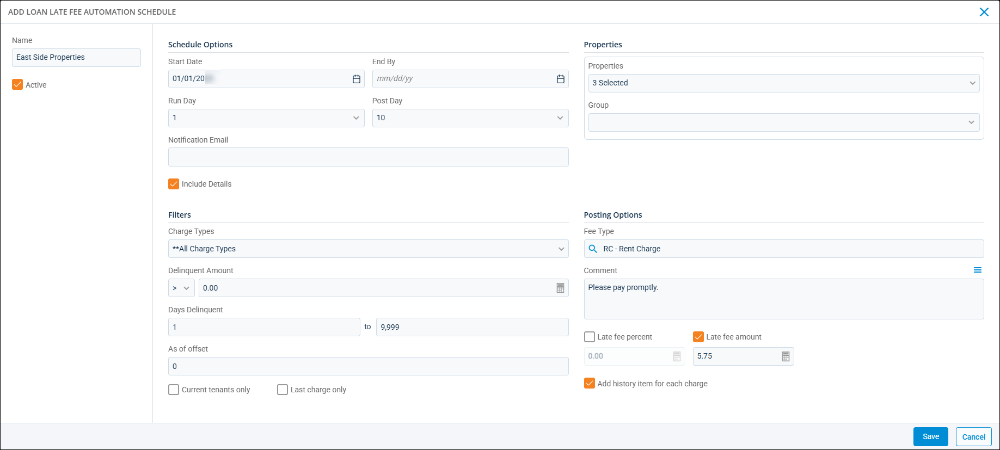

Source: https://rmxhelp.rentmanager.com/Topics/Express/Other/Automation-Loans-Receivable-Late-Fee-Add.htm
Add a Loans Receivable Late Fee Automation
You can use this Task Automation to save time managing loans receivable late fees and to reduce errors from manual entry. You can create a variety of loan late fee automations to meet the needs of each of your properties. For example, if you only charge late fees on rent payments at one of your properties, you can create a loan late fee automation that only runs when rent payments are late.
Related Privileges
| Group | Privilege | Column |
|---|---|---|
| Task Automation | Automate post loans receivable late fees | Add, View |
For more information, refer to Control User Access.
Related Preferences
To set up automation schedules, you must have the appropriate automation enabled in system preferences. For more information, refer to Task Automation (System Preferences).
Step 1: Create and Name the Schedule
More Information
If you need to edit an existing automation schedule, you do not need to complete the full process detailed here. For details about input fields you may want to edit, refer to the tables throughout this topic.
To create a new task automation for posting loan late fees, do the following:
-
Go to
 arrow_forward
arrow_forward  Administration, then go to .
Administration, then go to .
The Loan Late Fee Automation Schedules page displays. -
Click
 Add Schedule.
Add Schedule.
-
Enter a Name for the automation to display in the list on the Loan Late Fee Automation Schedules page.
Step 2: Set Up Schedule Options
In the Schedule Options section, set up the posting scheduling, including when the automation starts and ends and how frequently fees post. To set up the posting schedule, enter the following information:
| Columns | Description |
|---|---|
|
Start Date |
The first date on which the posting schedule goes into effect. More Information This is not necessarily the first date that the schedule executes. The options configured in the Schedule Options section on the Loan Late Fee Automation Schedule Details pop-up determine the first run date. |
|
End By |
The posting schedule's expiration date. If this field is blank, the schedule continues to post indefinitely or until a date is entered in the End By field on the Loan Late Fee Automation Schedule Details pop-up. |
|
Run Day |
The day of the month on which the automated posting occurs. Rent Manager automatically posts these loans receivable late fees early in the morning of the chosen Run Day. |
|
Post Day |
The date on which late fee transactions are added to the tenant account. More Information If you enter a Post Day of 31, Rent Manager dates the fees with the last day of each month, regardless of the number of days in the month. For example, with a Post Day of 31 and posting for April, fees are dated for the 30th. |
|
Notification Email |
The email address of a Rent Manager user that receives a notification for each successful or failed automatic posting. If entering more than one email address, separate each with a semicolon (;). |
|
Include Details |
Includes additional information in the notification email sent after an automatic posting. |
Step 3: Select Properties
Choose which properties are included in this automation schedule. You can select multiple properties, or you can select account groups in the Group drop-down.
More Information
This field populates only with the properties to which you have access. Your access to properties can be managed from your user account or on the property's details page. For more information, refer to Limit Access to a Property.
Step 4: Select Filters
In the Filters section, enter or make selection in the following fields.
| Field | Description |
|---|---|
|
Charge Types |
Transactions associated with these charge type(s) are examined by Rent Manager when determining if a tenant is delinquent. |
|
Delinquent Amount |
Tenants with a delinquent balance greater than (>) or less than (<) the specified value are examined by Rent Manager when determining if a tenant is delinquent. |
|
Days Delinquent |
Transactions that are delinquent within the specified number of days from your Run Day are examined by Rent Manager when determining if a tenant is delinquent. This is adjusted by the value in the As of offset field. |
|
As of offset |
Use this value to adjust the day on which Rent Manager examines if a tenant is considered delinquent. This is valuable when you want to determine tenant delinquency as of a date before the Run Day. For example, if the Run Day is 5 and the As of offset is -1, Rent Manager looks for tenants who are delinquent based on all filtering criteria on the 4th instead of on the 5th. The calculated late fees still post on the Run Day and are dated with the Post Day. |
|
Current tenants only |
Post late fees to only tenants who are currently active as of the specified date. |
|
Last charge only |
The most recent open charge of the selected Charge Types on the tenant's account are examined by Rent Manager when determining if a tenant is delinquent. |
Step 5: Select Posting Options and Save Automation
To finish setting up the automation schedule, do the following:
-
In the Posting Options section, enter or make selections in the following fields.
Field
Description Fee Type
The charge type used when adding late charges to delinquent tenants.
Comment
A comment added to late fee charges that are posted. This comment also displays on printed tenant statements.
Late fee percent
A percentage of the tenant's remaining balance is charged as a late fee.
Late fee amount
A flat amount is charged as a late fee.
Add history item for each charge
A history/note item is added to tenant accounts that confirm late fees were posted to the delinquent tenant.
-
Click Save.
The loan late fee automation schedule is added to Rent Manager.Related Preferences
If the Require ‘write letters’ before posting late fees and/or Require printout before posting late fees are checked in system preferences, a pop-up displays to remind you that saving the automation schedule overrides those preferences. For more information, refer to Posting Late Fees (System Preferences).
More Information
This automatic process does not occur immediately once the schedule has been configured and becomes active. Rent Manager performs all automated postings overnight so as not to interfere with your work.